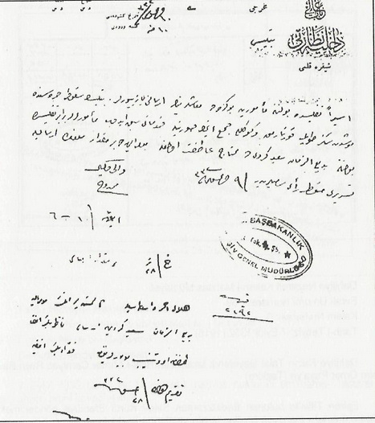
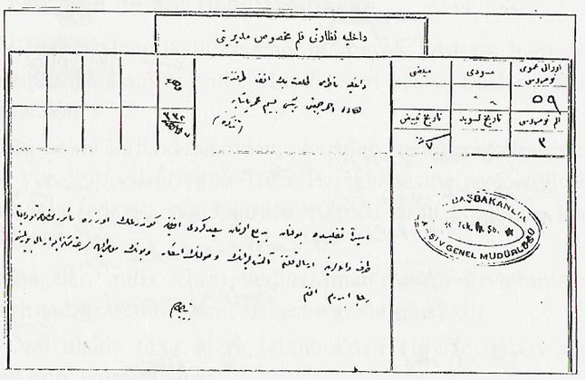
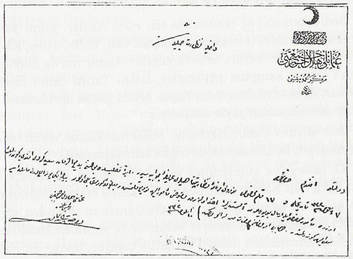

|
Esaretinde Osmanlý tarafýndan Üstada gönderilen para |
  
|
|
Esaretinde Osmanlý tarafýndan Üstada gönderilen para |
|
Esaretinde, Osmanlý tarafýndan Üstad'a gönderilen para
Gönüllü Milis kumandaný olarak 1.Dünya savaþýna katýlan Bediüzzaman, hem ayaðý kýrýlmýþ, hem de üç yerinden yaralanmýþ halde otuz üç saat kar ve buzlarýn içinde beklemiþti. Bu halde Bitlis deresinden çýkartýlan Bediüzzaman esir olarak Van-Culfa üzerinden Tiflis Hastahanesine sevk edilmiþti. Buradaki tedavisi yaz aylarýnýn Aðutos-Eylül günlerine kadar devam etmiþti.
Belgeler, milis albayý Bediüzzaman'a þanlý devletimiz Osmanlý sadrazamýnýn yakýn alakasýný göstermektedir. Özel ulakla 1254 Mark Ýstanbul'dan Tiflis'te tedavi gören Bediüzzaman'a gönderilmiþti. Bediüzzaman bir müddet Tiflis'in Varasofski Sokaðýnda kýrk dört numaralý kampta tutulmuþtu. Osmanlý Cihan Devletinin çöküþ günlerinde bile altmýþ Türk Lirasý karþýlýðý bin iki yüz elli dört Mark ediyordu. Bu meblað, Bediüzzaman'a, Osmanlýnýn sadrazamý tarafýndan, Kýzýlay baþkaný Besim Ömer Paþa'ya emredilerek Tiflis'e ulaþtýrýlmýþtý.

Esiren Tiflis'te bulunan memûrîne bu kerede maaþlarýnýn irsalini yazýyorlar. Bitlis'in sükûtu sýrasýnda Muþ'tan sekiz topu kurtarmak ve gönüllü cem'etmek suretiyle hidematý sebk edip memurlarla beraber Tiflis'te bulunan Bediüzzaman Said-i Kürdî'de muhtac-ý atýfet olmakla mumaileyh de bir miktar meblaðýn irsaliyle tesriri menût-ý re'yi sânileridir. 9 Aðustos 1332 (1916), Vali vekili Memduh
Hilâl-ý Ahmer vasýtasýyla altmýþ liranýn mumaileyh Bediüzzaman Said Kürdî'ye irsali Nazýr Beyefendi tarafýndan ad ve tensib buyurulduðundan Fuad Beyefendiye takdim olundu. 28 Aðustos 1332 (1916)

Dahiliye Nezareti Kalem-i Mahsus Müdüriyeti
Evrak Umumî Numarasý: 59
Kalem Numarasý: 3
Tarih-i Tebyiz: 7 Eylül 1332 (1916)
Dahiliye Nazýrý Talat Beyefendi tarafýndan Hilâl-i Ahmer Cemiyeti Reisi Besim Ömer Paþa'ya (Tezkire)
Esîren Tiflis'te bulunan Bediüzzaman Said-i Kürdî Efendiye gönderilmek üzere memur-ý mahsusa tevdian taraf-ý valalarýna irsal kýlýnan altmýþ liranýn vusulünün iþ'ar ve bunun mumaileyhe sürat-ý mümkine ile irsal buyurulmasýný rica ederim efendim.
Bab-ý Âli Mahreci, Tarih-i Keþidesi 10 Aðustos 1332 (1917)
Dahiliye Nezareti, Bitlis, Kaleme vûrûdu minhu 10.

Taht-ý Himaye-i Hazret-i Mûlûkanede
Osmanlý Hilal-i Ahmer Cemiyeti Merkez-i Umumisi
Dahiliye Nezaret-i Celilesine
Devletlû Efendim Hazretleri
7 Eylül 1332 tarihli ve 17 kalem-i mahsus numaralý emirname-i nezaret-penahileri ariz-i cevabiyesidir.
Esiren Tiflis'te bulunan Bediüzzaman Said Kürdî Efendiye gönderilmek üzere memur-ý mahsus ile irsal buyurulan altmýþ lira ahzolunarak makbuzu memur ileyhe tevdi kýlýnmýþ ve meblað-ý mezkur mukabili olan bin iki yüz elli dört mark esir mumaileyhe gönderilmiþtir.
Ol babda emr u ferman Hazret-i men lehul-emrindir.
10 Eylül 1332 (1916)
Osmanlý Hilal-ý Ahmer Cemiyeti Reisi
Besim Ömer Paþa